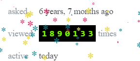

哈哈：180万程序员不知如何退出Vim编辑器...


很久以前，江湖中流传着一个神秘的问题：
如何退出Vim编辑器？
据说，很多人老死都没有退出Vim，也没有人知道答案。

直到6年前，终于有人把持不住，上Stack Overflow提出了这个问题。伟大的Stack Overflow说：这种问题也来问我，下不为例！！！但还是给出了答案。
这条答案精确、深邃，振聋发聩，直指人心！从6年前问题被提出到现在，已经有1890108人浏览。

How to exit the Vim editor?
点击ESC进入“正常模式”，然后输入“:”，进入“命令模式”。此时屏幕的下方会出现一个冒号，你可以输入以下命令，并按“ENTER”执行：
:q ，退出（:quit的缩写）
:q!，退出且不保存（:quit!的缩写）
:wq，保存并退出
:wq!，保存并退出即使文件没有写入权限（强制保存退出）
:x，保存并退出（类似:wq，但是只有在有更改的情况下才保存）
:exit，保存并退出（和:x相同）
:qa，退出所有(:quitall的缩写)
:cq，退出且不保存（即便有错误）
你也可以直接在“正常模式”下输入“ZZ”来保存并退出Vim（和:x相同），或者“ZQ”不保存并退出（和:q!相同）注意此处ZZ大写和小写是完全不同的。
Vim还有一个帮助菜单，可以通过“:help”调出来，基本能够解决你的绝大多数问题。
这条回答已被提问者正式采用，目前也获得了4300多赞。

显而易见，这种高赞高浏览量的问题，就如同国内的“热门”一样。Stack Overflow官方还曾做过深入挖掘，结果颇为有趣。
最爱浏览这个问题的区域：

最多浏览这个问题的三个区域是乌克兰、土耳其和印尼。最少访问的是中日韩。
用哪种语言的程序员最多浏览该问题？

最多浏览该问题的程序员使用的语言是JQuery, CSS和AngularJS；而C++、C语言和Ruby的开发者最少浏览这个问题。大家知道为啥会出现这种区别么?
更有趣的是，在国外，甚至不会退出Vim已经成为程序员圈内的一个经典老梗了。


那么问题来了，你会退出Vim么？
打卡送书活动
活动介绍：自律改变自我！打卡送书活动启动！
活动奖品：技术书籍 × 7
赞助商：清华大学出版社
本书是一部系统论述Java编程语言与编程方法的立体化教程（含纸质图书、电子书、教学课件、源代码与视频教程）。

本公众号全部博文已整理成一个目录，请在公众号里回复「m」获取！
推荐阅读：
5T技术资源大放送！包括但不限于：C/C++，Linux，Python，Java，PHP，人工智能，单片机，树莓派，等等。在公众号内回复「1024」，即可免费获取！！